Konečně přináším pokračování našeho putování po Českém ráji. Třetí den dovolené jsme zahájili další známou místní dominantou - hradem Trosky. Když jsem zde byla naposledy, byla zpřístupněna pouze jedna věž, ale dnes už je možné vylézt na obě, protože k té nižší, Babě, bylo přistaveno schodiště. Trosky jsou opravdu působivou památkou, kterou při návštěvě Českého ráje prostě nemůžete vynechat. Díky své poloze i výrazné podobě jsou Trosky dobře vidět ze spousty jiných turisticky atraktivních míst Ráje, a když se před vámi při cestování náhodou vyloupne jejich obrys, je to úchvatný pohled, kvůli kterému neváháte zastavit mezi poli a fotit jako o život :-)…
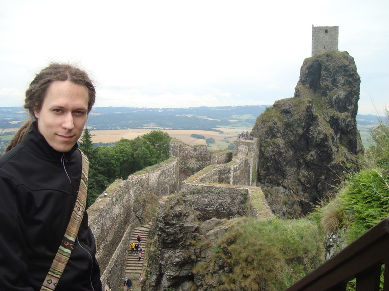
Na Troskách
Trosky vyrostly na dvou čedičových homolích koncem 14. století. O tom, jak hrad vypadal v době svého vzniku, se mnoho neví, protože se nedochoval žádný obraz ani rytina. Už za třicetileté války byl hrad opuštěný a zpustlý a teprve v období romantismu, kdy se stal zdrojem inspirace pro řadu malířů i básníků, došlo k jistému oprášení jeho zašlé slávy. V roce 1928 se staly Trosky majetkem Klubu českých turistů.
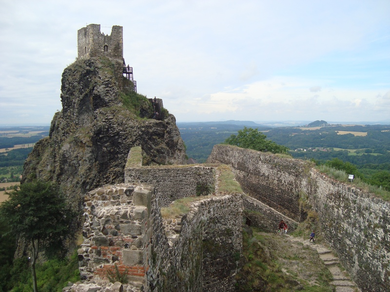
Pohled na Babu
Z Trosek vedly naše kroky do nedalekých Hrubých skal. Počasí nám ten den moc nepřálo, ale prý se tu stejně tma a vlhko drží po celý rok. Hrubé skály mají trochu jinou atmosféru než ty Prachovské, nicméně i zde si přijdou na své milovníci malebných vyhlídek a rozličných skalních útvarů. Okruh je mnohem delší, než ten v Prachovských skalách - dohromady jsme v Hrubých skalách strávili neuvěřitelných 7 hodin a nachodili 9 kilometrů, což nás tedy pěkně odrovnalo :-)…
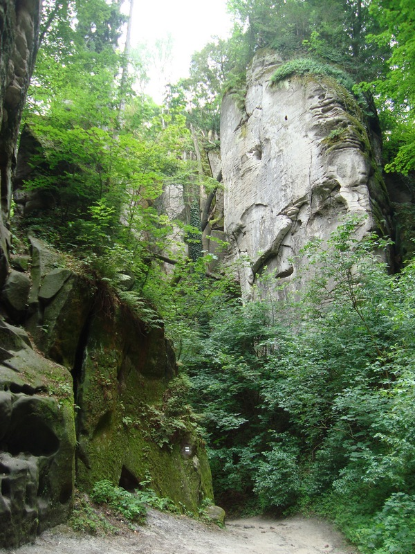
Hrubé skály
Jedním z nejzajímavějších a zřejmě i nejznámějších hruboskalských útvarů je toto skalní okno. Váže se k němu pověst, která praví, že kdo se k němu postaví zády a podaří se mu prohodit otvorem šišku, tomu se splní přání. Před 13ty lety se mi to nepodařilo, ale od té doby jsem hodně trénovala :). A kdyby vás to zajímalo, přála jsem si, aby se zlepšilo to mizerné počasí, což se na druhý den navzdory nepříznivé předpovědi skutečně vyplnilo :O!
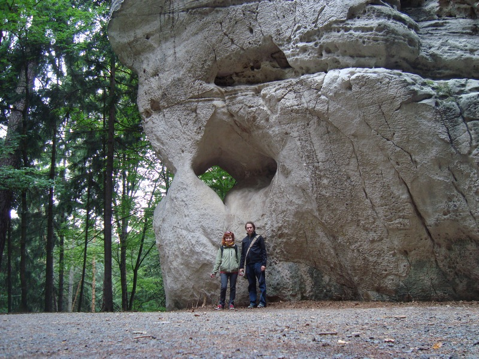
Skalní okno
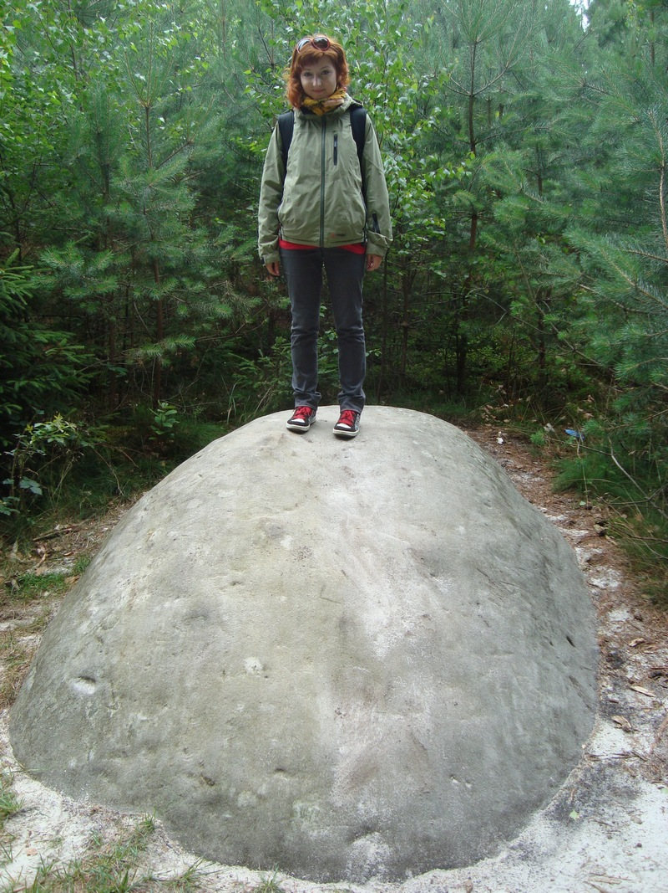
Ve skalách je všechno taaak veliké…
V Hrubých skalách rozhodně nesmíte minout Mariánskou vyhlídku, která nabízí krásný pohled na zámek Hrubá Skála i vzdálenější Trosky.
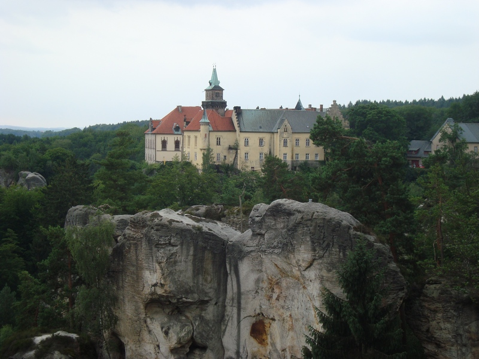
Zámek Hrubá Skála
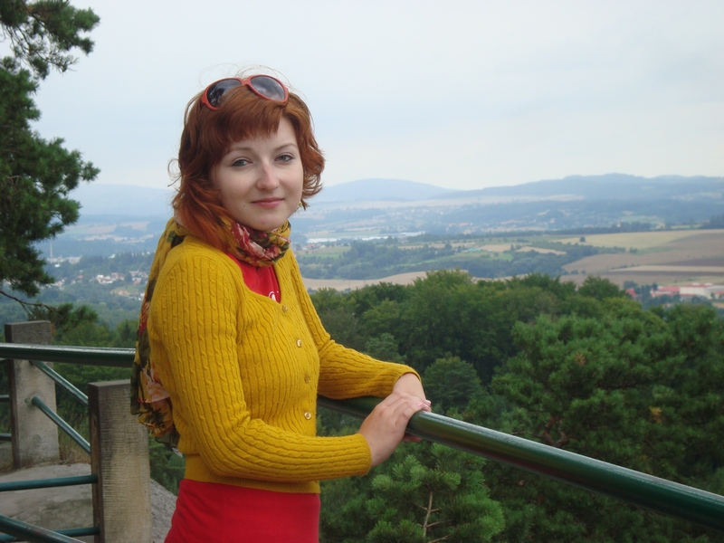
Na Mariánské vyhlídce
Cestou jsme minuli i několik pramenů - nacházeli jsme se koneckonců v tu chvíli jen malý kousek od Sedmihorek, někdejších lázní, kde jsme tenkrát před 13ti lety s našima bydleli - a v lesích jsme dokonce narazili na skřítka O:)…
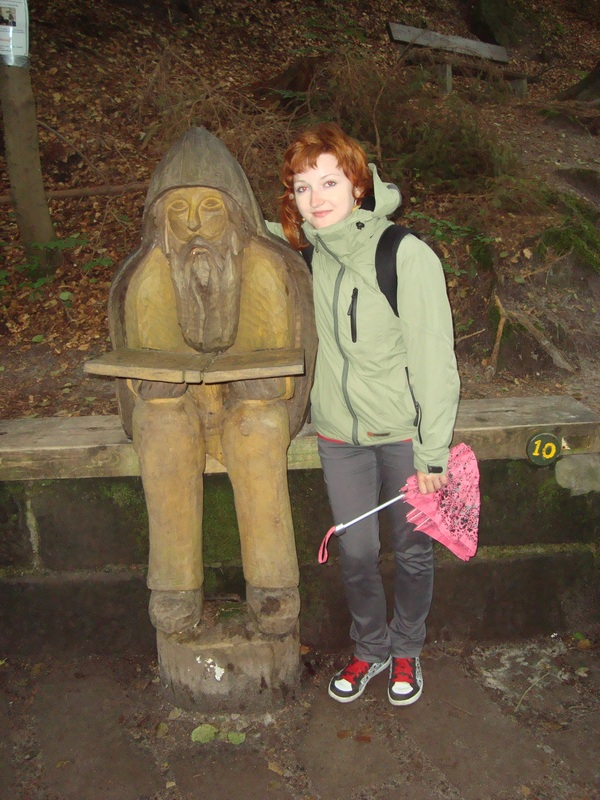
Lesní skřítek
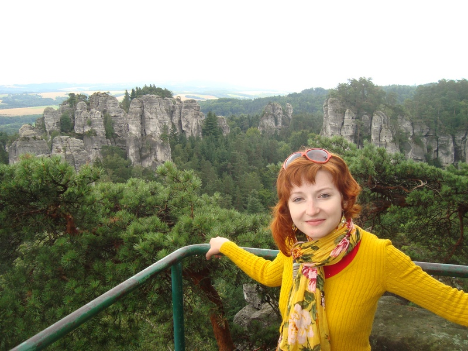
Skály, kam se podíváš
Z hruboskalského okruhu jsme posléze odbočili na cestu k nedalekému hradu Valdštejn. Před hradem jsme se však zastavili na kávičku a místní pivo Rohozec, takže jsme poslední prohlídku nakonec těsně nestihli (holt pátek třináctého 8-)). I tak jsme si ale nakonec Valdštejn prohlédli, byť “zespoda” :D.
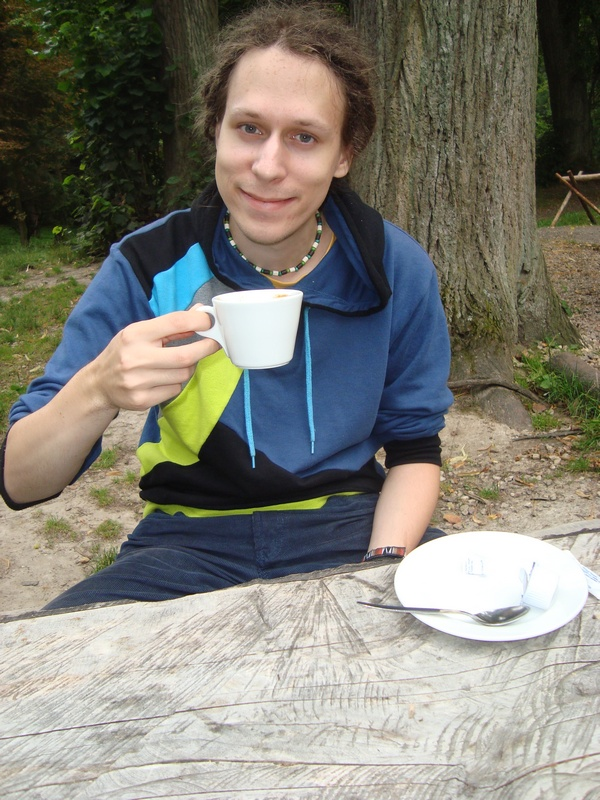
Odpolední kafíčko
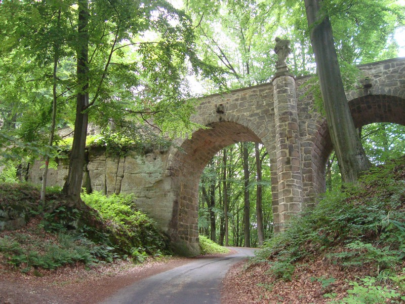
Pod hradem
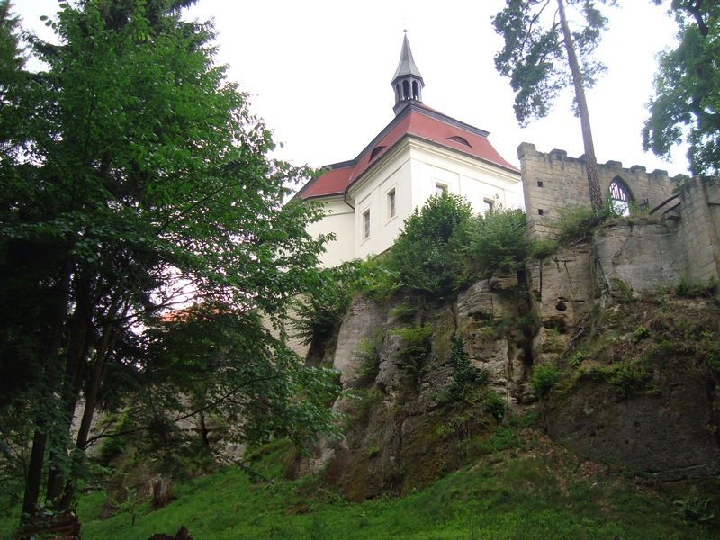
Valdštejn
Při zpáteční cestě z Valdštejna nás bohužel opět dostihlo nepříznivé počasí a protentokrát už se nás jen tak nepustilo. Vydatně lilo, až dokud jsme nedošli k poslední známé vyhlídce - vyhlídce na Kapelu, nádherný skalní útvar, který se toho času halil do oblaků stoupající páry.
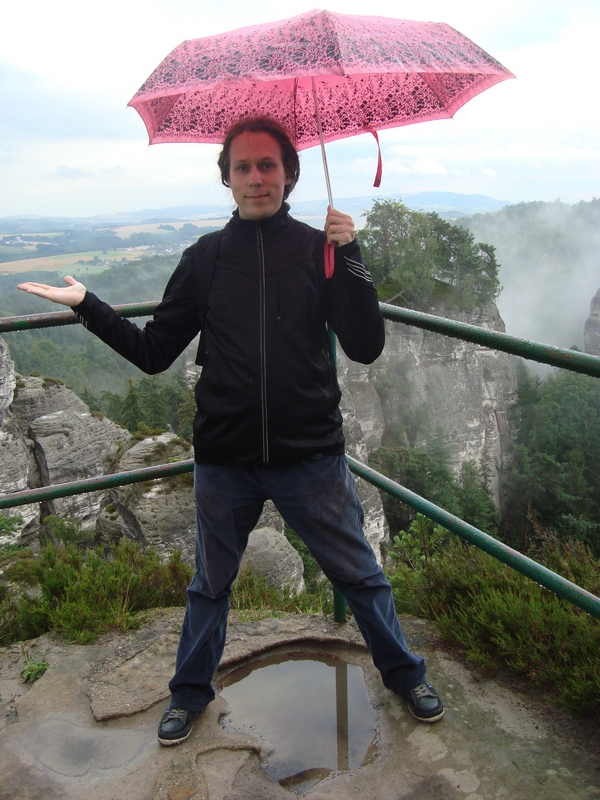
Pan Tau :)
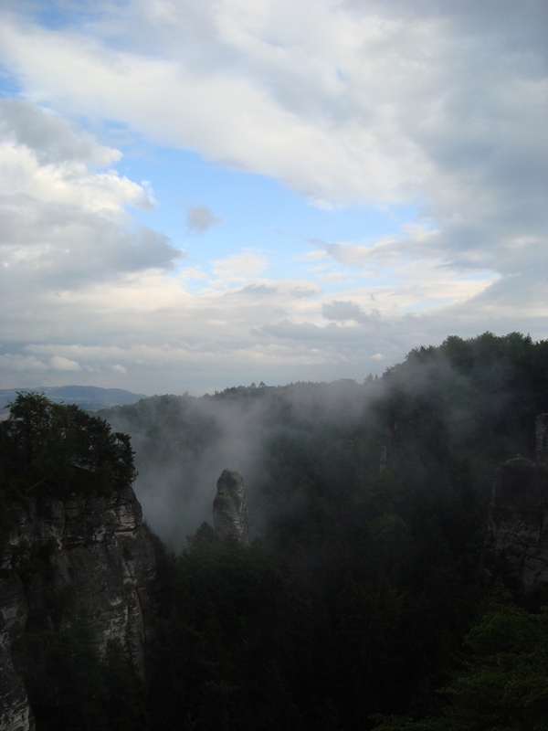
Krásné i za deště :)
Naší poslední zastávkou se stal skalní útvar známý jako “Adamovo lože”, a pak už jsme běželi osušit se do auta. Vzhledem k tomu, že jsme se ve skalách zdrželi opravdu strašně dlouho, dorazili jsme na naše parkoviště až někdy před osmou večer. Hlídači už tu pochopitelně nestáli, platilo se až při odjezdu a tudíž jsme to měli opět zadáčo :). Za ušetřené peníze jsme se rozhodli zajít si někam na večeři… a sám osud nás zavedl do tohoto stylového lokálu…:D
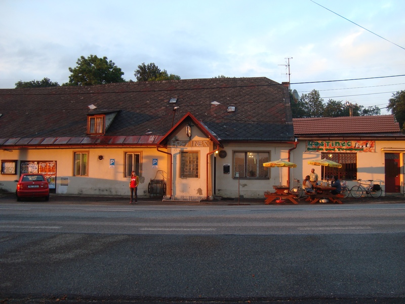
Hostinec
Typická vesnická hospoda, jako vystřižená z trilogie Slunce, seno, kde každý nově příchozí vzbudí nebývalý rozruch :D. Zcela instinktivně jsme se zašili do nejzastrčenějšího koutu hospody, ignorovali bujaré pozdravy party postarších cyklistů od vedlejšího stolu a vyčkávali příchodu obsluhy. Obsloužit nás přišla exoticky vyhlížející dívka - záhy se ukázalo, že pochází z Filipín - následovaná panem vrchním, který nám předložil jídelní lístek se slovy: " Těch prvních 5 pokrmů není problém, knedlík s vajíčkem…hmm, no to bych snad zvládl, ale ty ostatní věci si radši neobjednávejte." :DDD Nakonec jsme risknuli malou kofolu a knedlíky se zelím, plněné uzeným. Na to, že celá hospoda zvenčí i zevnitř vyhlížela stylem “nejnižší cenová skupina”, jídlo bylo překvapivě dobré. A protože byl pátek, nepřišli jsme ani o hudební vložku v podobě místního multiinstrumentalisty, který dokázal rozbalit kdejakej hit od starých dobrých českých šedesátek přes Tinu Turner až po Boba Marleyho :D… Prostě úlet :D!
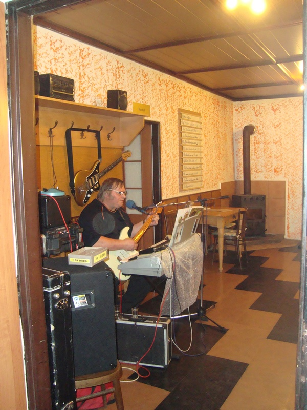
Hudební vložka musí bejt!
Interiér se nám bohužel nepodařilo příliš věrně zachytit - až budete mít cestu kolem, prostě se musíte zastavit, protože to se slovy popsat nedá 8-)…
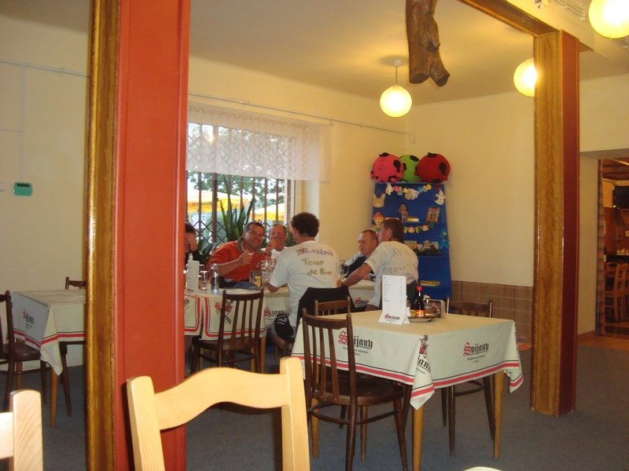
“Nefoť nás, my nechcem být v novinách :D!”
Po tomto nevšedním zážitku jsme se konečně vydali na zpáteční cestu domů do Lomnice. Ani tento poslední úsek dne se však neobešel bez trochy adrenalinu - asi v polovině trasy jsme se setkali se srnkou, která stála přímo uprostřed silnice. Překvapilo mě, jak byla veliká - zdálky se mi zdálo, že to snad musí být kráva :D. Naštěstí měla srna sama dost rozumu na to, aby se nám klidila z cesty, nicméně po zbytek jízdy jsme bedlivě střežili okolní louky a pastviny a skutečně jsme se přesvědčili o tom, že tento kraj je bohatý nejen na lesní plody, nýbrž i na lesní zvěř 8-). Žádná nám už ale pak naštěstí cestu nezkřížila.
Řekla bych, že na jeden den bylo těch dobrodružství a zážitků až až :-)! Na závěr už snad jen jeden snímek pořízený na zpáteční cestě mezi poli. Myslím, že vůbec nepotřebuje komentář… prostě Ráj :-)!

Pokud by tě zajímaly moje zkušenosti s chemickým barvením nazrzavo, tak si můžeš počíst v článku Jak se stát zrzkou
:-)
Vytáhla jsem fotky z Adršpachu a mám toho týpka od Panskýho hostince na fotce!!! U toho je popisek: “Místní šumař Vohmátlo” :D Neptej se mě proč…